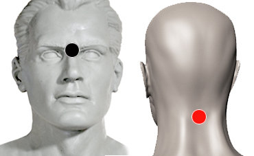

David (carácter)
Par
interciliar - bulbo raquídeo

Generalidades:
Es un par de tipo emocional, ubicado entre las cejas y en la nuca. Los síntomas son una personalidad vacilante que puede oscilar entre un carácter tímido, depresivo y débil o un caracter agresivo e iracundo. En niños se puede presentar como falta de crecimiento injustificado y/o como enuresis nocturna (orinarse en la cama).